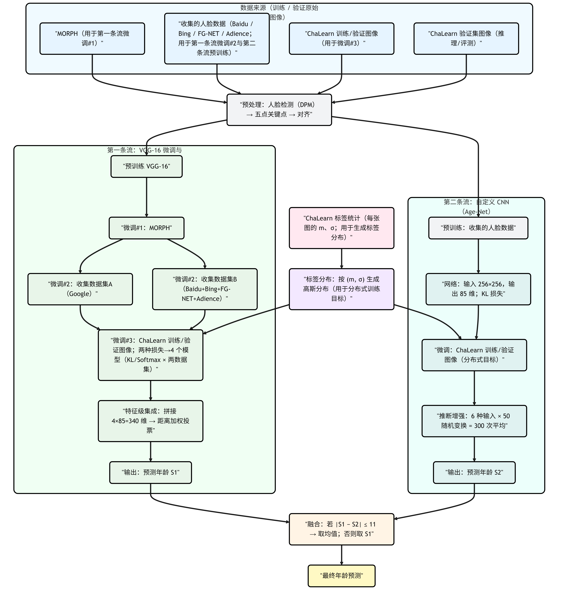

精读解析 | 深度标签分布学习：分布监督与实用构造
本文对 Xin Geng 等人的论文《Deep Label Distribution Learning for Apparent Age Estimation》（2015）以及《Practical Age EstimationUsing Deep Label Distribution Learning》（2020）进行了精读，以 ICCVW 2015 的方案为起点，梳理其面向 ChaLearn 的两流 CNN、由标注均值与方差生成软标签并以 KL 做分布监督的完整训练与推理；再到 2020 年 Practical DLDL，将“全局”标签分布收缩为以真实年龄为中心的邻域截断分布并系统扫 σ。
论文链接：
Deep Label Distribution Learning for Apparent Age Estimation
Practical Age EstimationUsing Deep Label Distribution Learning
本文前置文章链接：精读解析|从单一标签到标签分布：面部年龄估计的新方法
深度标签分布学习
分布监督
本节对应的是 2015 年 ICCV Workshops 的论文《Deep Label Distribution Learning for Apparent Age Estimation》，讨论的是 ChaLearn Looking at People 表观年龄挑战赛的参赛方案。比赛数据不是传统的生理年龄单标签，而是每张图像由多名标注者给出表观年龄均值 m 与标准差 σ，用于刻画不确定性；作者据此把学习目标设为年龄分布，并在最终测试集上报告了 0.3057 的成绩。官方提供的训练与验证共 3,615 张图像，训练 2,479、验证 1,136，测试集单独用于评测。
数据进入模型前先做统一预处理：用 DPM 进行人脸检测，随后用五个关键点（双眼中心、鼻尖、左右嘴角）做仿射对齐，得到标准化的人脸图像作为两条网络流的输入。这样的处理旨在降低姿态与对齐差异带来的干扰，为后续的分布监督提供更稳定的表征。
整体建模采用两条并行的深度 CNN 流。第一条流以 VGG-16 为骨干，输入为 224×224 的对齐人脸，包含五个卷积层与两层全连接，末层输出 85 维覆盖 0–84 岁的响应，训练时可接 KL 分布损失或单龄 softmax 损失。在训练日程上先在 MORPH 做第一次微调，再在两份自收集数据上分别做第二次微调，最后在比赛的训练与验证图像上进行第三次微调；由于第三次同时使用分布监督与分类监督，结合第二步的两套数据，共得到四个互补模型。推理阶段将四个模型各自的 85 维输出拼接为 340 维特征，并采用指数核的距离加权投票把特征映射为单一年龄作为该流输出。
第二条流使用一套自定义 CNN，输入为 256×256 的对齐人脸，首层采用 11×11 卷积并配合批归一化，最后同样输出 85 维并以 KL 损失对齐由 m、σ 生成的标签分布。该流先用收集的人脸数据预训练，再在比赛的训练与验证图像上微调。为提升稳健性，作者基于六种不同的输入表征各自训练网络，并在推理阶段对单张图像进行 50 次随机尺度与翻转，总计获得 300 次预测后取平均作为该流输出。
两条流在年龄标量上做简单融合：若两者预测差值不超过 11 岁，则取均值，否则采用第一条流的结果作为最终输出。比赛阶段的测试图像按同样的检测与对齐流程进入两条流，按上述规则融合得到提交成绩。详细流程如下图所示。

实用构造
在传统标签分布学习里，会把单龄标签扩展为覆盖整个年龄空间 \(Y=\{1,2,\ldots,85\}\) 的“全局”软分布（常用高斯/三角等），例如以真实年龄 \(a\) 为中心的高斯标签分布写作 \[ D_a(y)=\frac{1}{Z}\exp\!\Big(-\frac{(y-a)^2}{2\sigma^2}\Big),\quad y\in Y, \] 其中 \(Z\) 是归一化常数（配分函数），用于保证 \(\sum_{y\in Y}D_a(y)=1\)： \[ Z=\sum_{y\in Y}\exp\!\Big(-\frac{(y-a)^2}{2\sigma^2}\Big). \]
考虑到与 \(a\) 相差过大的年龄基本无关，可将分布截断到邻域，仅保留 \([a-5,a+5]\) 内的概率并重归一化： \[ D_a^{\text{trunc}}(y)=\frac{1}{Z'}\exp\!\Big(-\frac{(y-a)^2}{2\sigma^2}\Big)\,\mathbf{1}\{|y-a|\le 5\},\quad y\in Y, \] 其中 \(Z'\) 同样是归一化常数，用于保证 \(\sum_{y\in Y}D_a^{\text{trunc}}(y)=1\)： \[ Z'=\sum_{\substack{y\in Y\\ |y-a|\le 5}}\exp\!\Big(-\frac{(y-a)^2}{2\sigma^2}\Big). \] 注意当 \(a\) 靠近边界时，实际邻域为 \([a-5,a+5]\cap Y\)。
模型端用 CNN 输出 \(\hat D(y\mid x)\)（85 维，经 softmax 归一），以 KL（等价软标签交叉熵）最小化 \[ \sum_{y\in Y} D_a^{(\cdot)}(y)\log\!\frac{D_a^{(\cdot)}(y)}{\hat D(y\mid x)} \] 完成学习，其中 \(D_a^{(\cdot)}\) 可取未截断或截断后的目标分布。
实验与结果分析
Chalearn比赛
论文采用 ChaLearn 官方的表观年龄评分指标 ε=1−exp(−(t−m)²/(2σ²)) 来评估方法效果，并分别在验证集与最终测试集上报告结果：在验证集上，两条流分别得到 0.3534 与 0.3610，按“|S1−S2|≤11 则取均值，否则取 S1”的简单融合规则后提升到 0.3377；在最终测试集上，该方案取得 0.3057 的分数，优于主办方报告的人类水平（约 0.34），并进入当届排行榜前五。整体来看，分布监督结合双流与轻量融合带来了稳定且可量化的收益，既体现在单流到融合的验证集改进，也体现在测试集的绝对分数上。
截断分布
关于截断分布的标签分布构造，实验部分围绕 MORPH 与 FG-NET 两个常用数据集展开，并统一采用“检测—对齐—归一尺寸”的预处理流程。作者使用 DPM 检测人脸区域，以两眼中心、鼻尖与左右嘴角五点进行几何对齐，最后将图像调整为 224×224×3，以降低姿态与对齐差异造成的扰动，这一流程在文中给出示意图与说明。
训练与评估设置为对每个数据集做 80/20 的随机划分，评价指标采用 MAE，并给出定义与实现细节；优化超参包括初始学习率 0.001、总训练 80 个 epoch、MORPH 的 mini-batch 为 80、FG-NET 为 2，并报告使用 0.8 的 dropout。为验证“截断到邻域”的分布构造是否有效，实验在 \([a-5,a+5]\) 区间内采用高斯形状并对 \(\sigma\) 做网格扫描（0、0.5、1.0、…、5.0），同时给出与三角分布的概念性对照，主报告基于高斯结果。
在超参数选择上，作者绘制了“\(\sigma\)–MAE”曲线：MORPH 在 \(\sigma=3.0\) 时达到最优，MAE 为 2.15；FG-NET 在 \(\sigma=1.5\) 时最优，MAE 为 3.14。曲线趋势与最佳点共同表明“邻域截断 + 合理宽度”的标签分布能带来稳定收益。
与既有方法对比方面，论文方法在 MORPH 与 FG-NET 上分别达到 2.15 与 3.14 的 MAE，相比 DLDL 的 2.43 与 3.76 进一步下降；作者据此指出，在多种 \(\sigma\) 设定下，基于截断高斯的分布监督整体优于 DLDL 及传统基线（IIS-LLD、CPNN、ALDL、AGES 等）。此外，论文还报告了在 MORPH 上按性别与种族分组的误差统计，用于讨论数据规模与多域训练对泛化的潜在影响。